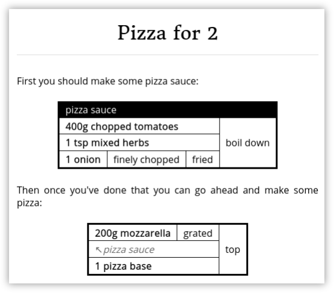
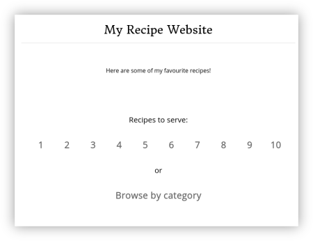
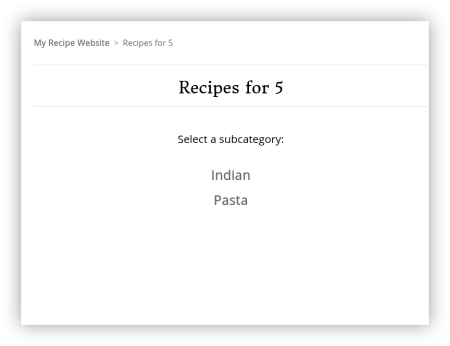
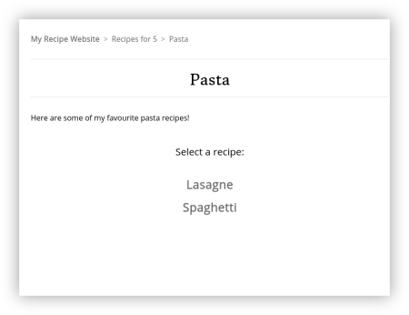
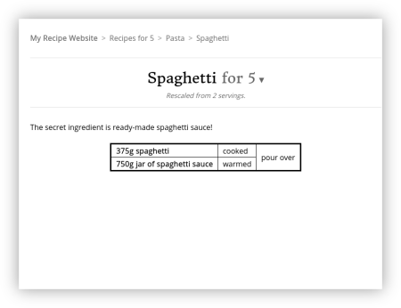

Recipe Grid Tutorial¶
This tutorial will give you an introduction to Recipe Grid including its recipe description language and tools for compiling recipes into stand-alone HTML pages or complete recipe websites.
Recipe description basics¶
Recipes are not described directly in tabular form. Instead, these tables are generated from a simple textual description of the recipe within a Markdown document.
The following example shows a simple recipe Markdown file:
Boiled egg for 1
================
A fairly boring recipe...
boil for 3.5 minutes (
1 egg,
500ml water,
)
This is compiled into HTML using the recipe-grid command:
$ recipe-grid path/to/my_recipe.md
Which produces a file called my_recipe.html which looks like this:
As you can see, the textual recipe description in the indented block in the Markdown file has been converted into the tabular form (we’ll look at this syntax in greater detail shortly). Aside from these indented blocks, a recipe is just an ordinary Markdown file which you can structure however you like.
Note
In Markdown indented blocks are usually used for code listings but are co-opted by Recipe Grid for recipe descriptions. If you want to include an ordinary code block in your recipe, you can do so using a Markdown ‘fenced’ block like so:
Here is a code listing:
```
print("Hello, world!")
```
The recipe-grid command has a few options which allow us to automatically rescale the quantities in a recipe. In addition to the recipe-grid command (which compiles a single recipe into a standalone HTML page) a other commands are provided to, for example, produce a static ‘recipe book’ style website from a collection of recipes. We’ll return to look at these commands and options at the end of this tutorial.
Recipe description syntax¶
The central feature of Recipe Grid is its recipe description language which is compiled into the tabular form which appears in a compiled recipe. Lets take a look at this language.
For brevity, in the examples below we’ll just show the recipe descriptions. To
compile these you’ll need to place them in an indented block in a Markdown file
and compile them using the recipe-grid command as illustrated above.
Ingredients and steps¶
Recipe Grid recipes are described in terms of ingredients and steps which are carried out on these ingredients.
An ingredient is usually defined by writing a quantity next to a name, for
example 2 large eggs or 1 tbsp of oil.
Note
Quantities can be given as either decimal numbers or as fractions. For
example 3.5 and 3 1/2 could both be used to mean three-and-a-half.
A step is defined by a description, followed by a pair of parentheses containing the inputs to that step. For example:
fry(2 large eggs, 1 tbsp of oil)
| 2 large eggs | fry |
1 tbsp
|
A recipe typically consists of a hierarchy of steps and ingredients, for example:
put in rolls (
fry until soft (
slice(1 large onion),
1 tbsp of oil
),
boil(4 hot dog sausages),
sliced(4 hot dog rolls),
)
| 1 large onion | slice | fry until soft | put in rolls |
1 tbsp
|
|||
| 4 hot dog sausages | boil | ||
| 4 hot dog rolls | sliced | ||
As in this example, you are free to split the inputs to a step over multiple lines if this makes the recipe description easier to read.
Note
If your step or ingredient name contains any characters more exciting than letters and numbers you must enclose it in single or double quotes. For example:
"fry (don't allow to burn)" ( 1 can of spam )
| 1 can of spam | fry (don't allow to burn) |
Listing ingredients separately¶
Often when you’re translating a traditional recipe into the recipe description syntax you already have a list of quantities and ingredients. Rather than manually transcribing these quantities, it is possible to copy-and-paste a list of ingredients up-front and refer back to these later in the recipe description. For example:
400g of chopped tomatoes
1 tsp of mixed herbs
1 onion, finely chopped, fried
200g of mozzarella, grated
1 pizza base
top (
mozzarella,
boil down(chopped tomatoes, mixed herbs, onion),
pizza base,
)
200g
|
grated | top | ||
400g
|
boil down | |||
1 tsp
|
||||
| 1 onion | finely chopped | fried | ||
| 1 pizza base | ||||
When referring to an ingredient you only write the ingredient name, e.g. ‘mixed herbs’: the quantity (e.g. ‘1 tsp’) and simple prepositions (e.g. ‘of’) should be omitted.
Additional simple steps, separated by commas, can be defined for ingredients listed up-front, for example the onion has two steps listed: ‘finely chopped’ and ‘fried’. In the recipe description later on where we say ‘onion’ Recipe Grid will insert both the ingredient and the steps we defined.
Note
The syntax above relies on Recipe Grid being able to distinguish quantities and units from an ingredient’s name. Recipe Grid knows about the following common cooking units:
bag, bags, box, boxen, boxes, bulb, bulbs, can, cans, clove, cloves, cup, cups, g, gram, grams, kg, kilo, kilogram, kilograms, kilos, knob, knobs, l, lb, lbs, litre, mill, milliliter, milliliters, mills, ml, ounce, ounces, oz, ozs, pack, packet, packets, packs, pinch, pinches, pint, pints, pound, pounds, rasher, rashers, sachet, sachets, sack, sacks, strip, strips, table spoon, table spoons, tablespoon, tablespoons, tbsp, tbsps, tea spoon, tea spoons, teaspoon, teaspoons, tin, tins, tsp, tsps
If you’re dealing with an unusual unit which Recipe Grid might not know about, or you just prefer to be explicit, you can surround the quantity and unit with curly brackets, for example:
{2 scoops} of ice cream
By contrast, if your ingredient name might be confused for a unit or preposiition you can use quotes around the ingredient name, for example:
2 "KG Spooner Brand Biscuits"
Note
In many of these examples we’ve included the preposition ‘of’ in ingredient descriptions purely to make them read better. This is completely optional as far as the recipe description language is concerned: ‘1 tsp of mixed herbs’ and ‘1 tsp mixed herbs’ are equally valid.
Sub-recipes¶
Recipe Grid allows recipes to be broken up into sub-recipes which can make them easier to write. For example, we can break the pizza sauce from the previous recipe into its own sub-recipe like so:
pizza sauce = boil down (
400g chopped tomatoes,
1 tsp mixed herbs,
fried(finely chopped(1 onion)),
)
top (
grated(200g mozzarella),
pizza sauce,
1 pizza base,
)
200g
|
grated | top | ||
400g
|
boil down | |||
1 tsp
|
||||
| 1 onion | finely chopped | fried | ||
| 1 pizza base | ||||
Notice that, once compiled, the sub recipe is seamlessly combined into the final recipe.
Sometimes it is helpful if a sub recipe is named and called out in the final
recipe; particularly for more complex recipes, or recipes where some parts can
be prepared in advance. Replacing the = symbol with := in our sub
recipe definition will cause Recipe Grid to highlight and label the sub recipe
in the generated table, for example, after modifying the example above we get:
200g
|
grated | top | ||
| pizza sauce | ||||
400g
|
boil down | |||
1 tsp
|
||||
| 1 onion | finely chopped | fried | ||
| 1 pizza base | ||||
Note
The up-front ingredient syntax described in the previous section is actually just a short-hand for creating a sub recipes. When a single ingredient (with any number of steps acting on it) is defined on its own, a sub recipe with the ingredient’s name is automatically created.
Splitting recipe components up¶
Sometimes recipes call for ingredients or sub recipes to be split into parts which are then used separately. For example in the following recipe for enchiladas, some of the sauce is mixed with the chicken and some is poured over the top before baking.
tomato sauce = boil down (
400g chopped tomatoes,
spices,
)
bake until golden (
pour over(
fill (
simmer for 5 minutes (
fry (
200g chicken,
sliced(1 onion),
),
2/3 of the tomato sauce,
),
4 tortilla wraps,
),
remaining tomato sauce,
100g grated cheese,
)
)
| tomato sauce | |
400g
|
boil down |
| spices | |
200g
|
fry | simmer for 5 minutes | fill | pour over | bake until golden | |
| 1 onion | sliced | |||||
| 2⁄3 of the tomato sauce | ||||||
| 4 tortilla wraps | ||||||
| remaining tomato sauce | ||||||
100g
|
||||||
In this case, Recipe Grid splits the recipe into two tables: one for the tomato sauce and one for the remainder of the recipe. In the main part of the recipe the references to the tomato sauce contain links to the sub recipe.
References to sub recipes follow a similar form to ingredients: they begin with
a quantity (e.g. 20g) or proportion (e.g. 1/2 of the or 50% or
remaining) followed by an optional preposition (e.g. ‘of the’) and then
the name of the sub recipe being referenced.
Sub recipes with multiple outputs¶
Sometimes a step may produce multiple things. For example, after boiling some vegetables you may wish to use both the vegetables and the water they were boiled in. To do this, you can define a sub recipe to have multiple outputs like so:
boiled veg, veg water = drain reserving water(
boil(
carrots,
peas,
)
)
pour over (
make gravy (5 tsp of gravy browning, veg water),
boiled veg,
)
| carrots | boil | drain reserving water |
|
| peas |
5 tsp
|
make gravy | pour over |
| veg water | ||
| boiled veg | ||
Mixing prose and recipe tables¶
For particularly complicated recipes it is possible to split a recipe into sub recipes which appear at different points in the document. To do this, simply create multiple indented blocks in your markdown document which define sub recipes which reference each other. For example:
Pizza for 2
===========
First you should make some pizza sauce:
pizza sauce = boil down (
400g chopped tomatoes,
1 tsp mixed herbs,
fried(finely chopped(1 onion)),
)
Then once you've done that you can go ahead and make some pizza:
top (
grated(200g mozzarella),
pizza sauce,
1 pizza base,
)
Will compile into:
Note
You can only reference sub recipes defined earlier in the recipe description, or in an earlier indented block. Forward references are not allowed.
Scaling recipes¶
Recipe Grid can automatically rescale quantities in recipes. Using the
recipe-grid command, this is achieved by adding the --scale argument
followed by a scaling factor. For example, to compile a recipe, halving all of
the quantities we would write:
$ recipe-grid --scale 1/2 path/to/recipe.md
Note
When the scaling factor is given as an integer or a fraction, quantities in
the recipe will be shown as fractions too (where the denominator is
sensible). Using a decimal number (e.g. 0.5) will cause all quantities
to be shown as decimal numbers.
When a recipe’s main title ends with a phrase like for 3 or serves 7,
the --servings argument can be used instead, taking the desired number of
servings to make (saving hand-calculating the appropriate scaling factor).
$ recipe-grid --servings 3 path/to/recipe.md
In either case, when the recipe is compiled, a subtitle is added indicating any scaling applied:
Sometimes your recipe may contain numbers which ought to be scaled with the ingredient quantities. For example, in a burger recipe you might have a step which says ‘divide into 4 patties’. To make a number scale with the recipe you can enclose it in curly brackets, for example:
grill for 10 minutes (
divide into {4} patties (
mash together(
450g minced beef,
finely chopped(1 onion),
1 tsp mixed herbs,
)
)
)
450g
|
mash together | divide into 4 patties | grill for 10 minutes | |
| 1 onion | finely chopped | |||
1 tsp
|
||||
And then the same recipe scaled up by a factor of two gives:
900g
|
mash together | divide into 8 patties | grill for 10 minutes | |
| 2 onion | finely chopped | |||
2 tsp
|
||||
Tip
You can also use the curly bracket syntax in the rest of your Markdown document, not just in indented recipe description blocks.
Note
To get a literal { or } character you can use {\{} or {\}}
respectively.
Linting¶
Recipe Grid provides a linting tool, recipe-grid-lint, which checks for common mistakes within recipes.
For example, given the following recipe:
Boiled egg for 1
================
A simple recipe, with a simple mistake...
2 eggs
500ml water
boil(egg, water)
The linter will spot that the eggs were never used: in the recipe we mistakenly referenced ‘egg’ and not ‘eggs’.
$ recipe-grid-lint path/to/recipe.md
/path/to/recipe.md: Warning: Ingredient 'eggs' was defined but never used. [unused_ingredient]
When no issues are found, the command exits without printing anything.
Generating recipe book static websites¶
As well as compiling individual recipes into standalone HTML pages, Recipe Grid can also compile collections of recipes into a complete recipe book website using the recipe-grid-site command. The generated websites are completely static and may be used both on- and offline.
To generate a recipe website, recipes should be collected together with
filenames ending in .md. If desired, recipes can be grouped into a
directories which and displayed as browsable categories in the generated
website.
A README.md file may optionally be added to each directory and will be
shown on the relevant recipe browsing pages.
For example a site might have a directory tree as follows:
+ README.md
+ pasta/
| + README.md
| + spaghetti.md
| + lasagne.md
+ indian/
| + dahl.md
| + curry.md
A recipe website is then generated using the recipe-grid-site command as follows:
$ recipe-grid-site path/to/recipes/dir/ path/to/output/dir/
The generated website can then be opened in a browser and used locally or uploaded to a static web hosting service and used online.
   